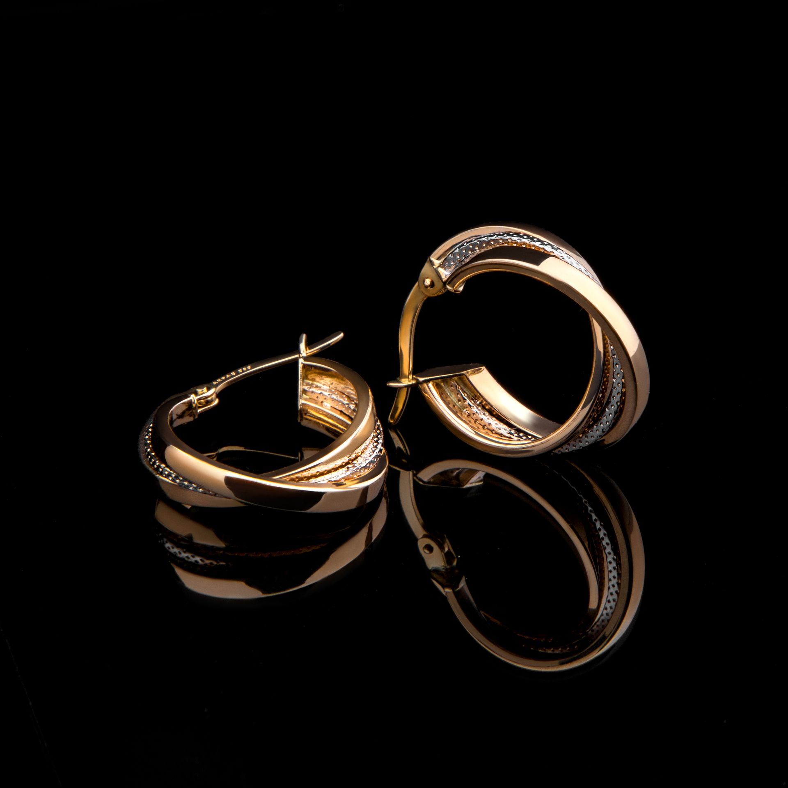
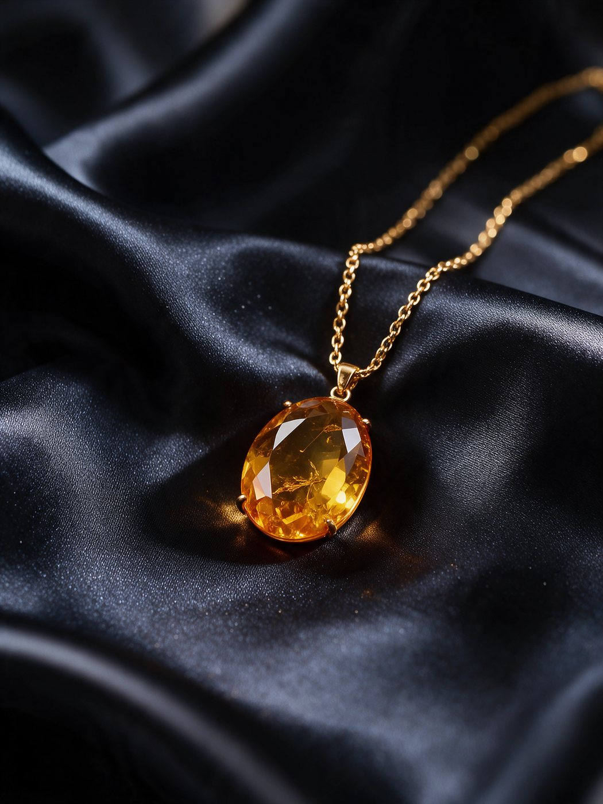
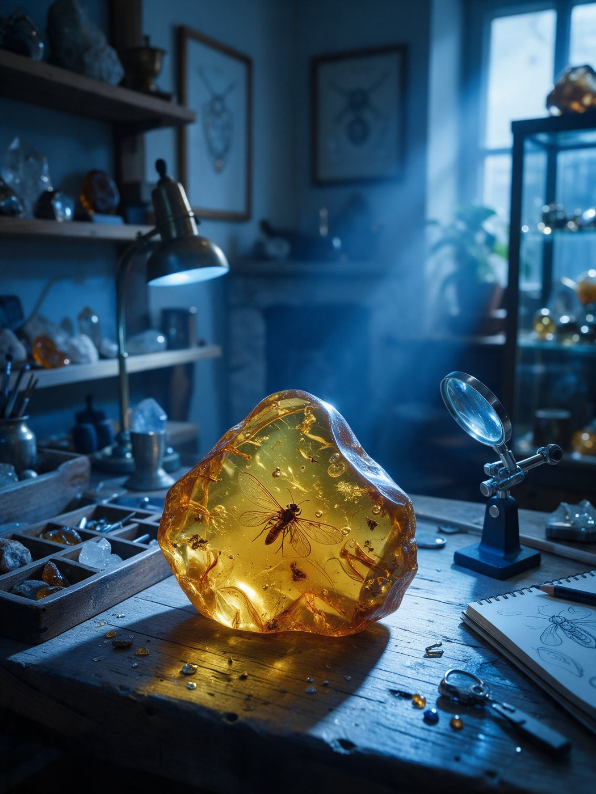
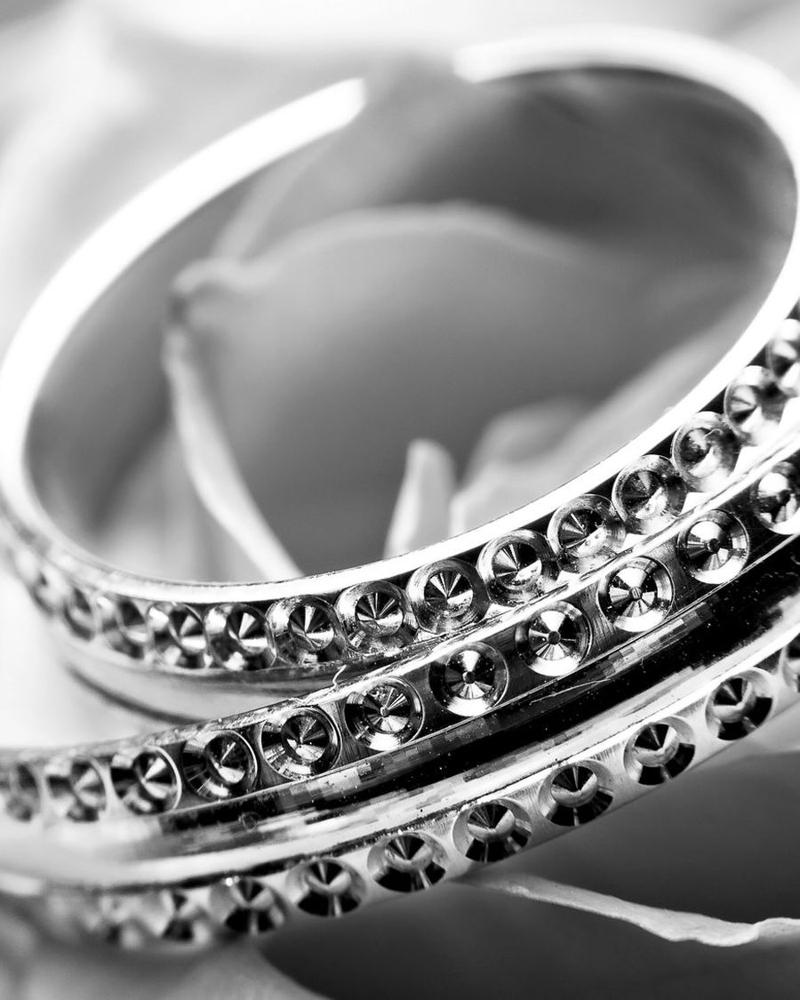
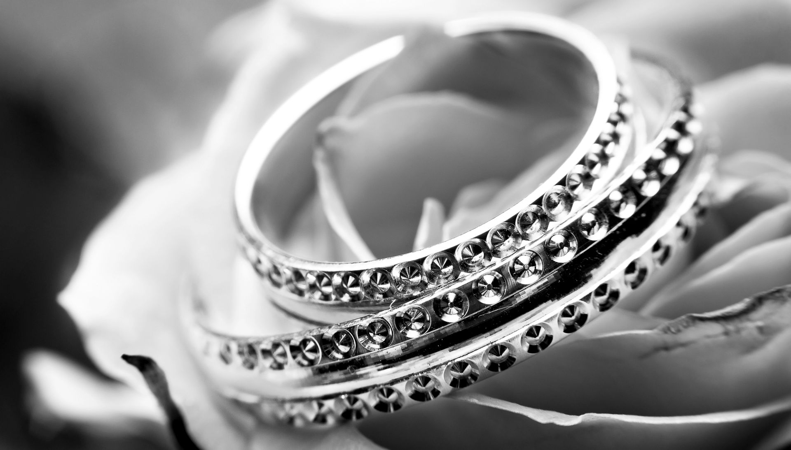
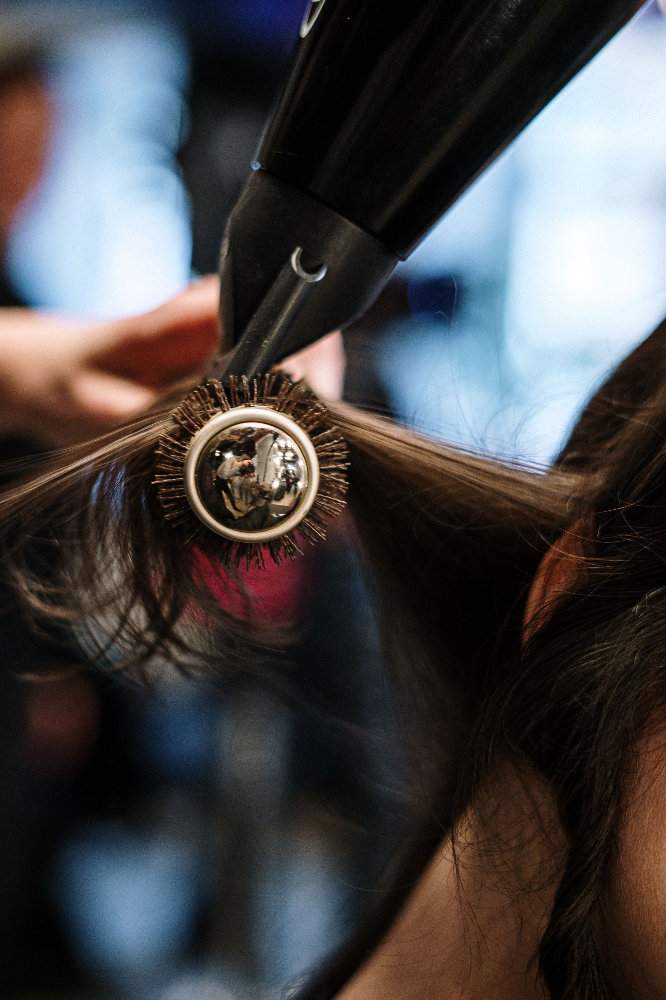

Atelier · İstanbul · est. 2011
Amber
Fossil resin set in eighteen-carat gold, by hand, one piece at a time.
The current case
Four pieces,
none repeated.



Signature · Under the loupe
Look closer.
It gets better.

- 01Pavé, 0.9 mm
Each stone sits in its own seat, cut with a graver under the glass — no two beads alike.
- 02Milgrain edge
A ring of beads rolled by hand along the rim, so the light breaks before it reaches the stone.
- 03Underside
Finished where nobody looks: open galleries, so the metal touches skin and the stone touches light.

The bench
One maker.
One piece at a time.
- I
Select
Raw amber is graded under daylight for clarity, inclusions and warmth. Most of it is sent back.
- II
Set
The mount is made around the stone, never the other way round. Wax, cast, then finished by hand.
- III
Wear
Every piece leaves with a card that records its maker, its gold and the day it was finished.
By appointment
Come and hold
one.
Nuruosmaniye 14, İstanbul · Tue – Sat, by appointment · info@izdencreative.com
Amber is a fictional atelier created as a design demonstration by İzden Creative.